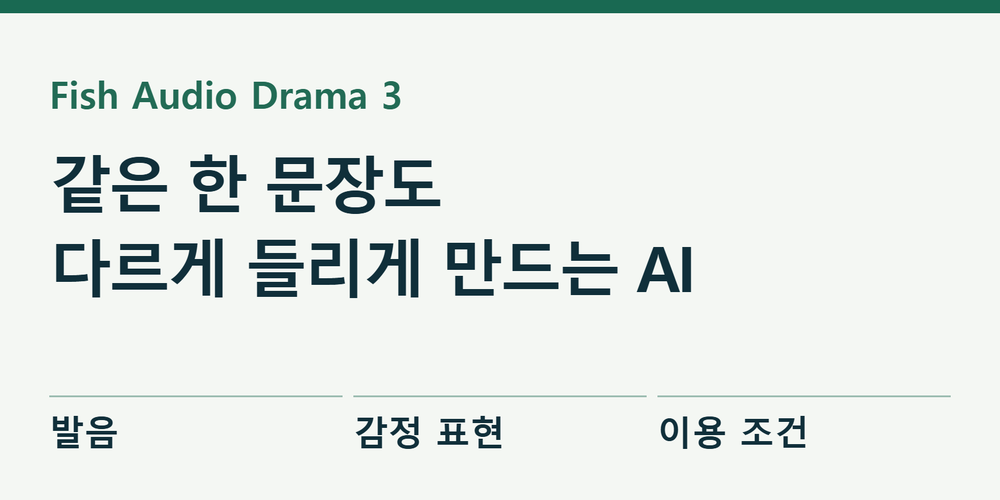

AI 목소리도 연기를 한다
“괜찮아.”라는 한마디도 안심시키며 말할 때와 애써 웃으며 말할 때 뜻이 달라진다. 음성 생성 서비스 Fish Audio의 Drama 3는 이런 차이를 글로 지시하는 TTS, 즉 글을 소리로 바꾸는 모델이다. 목소리를 고르는 데서 끝나지 않고, 문장 어느 지점에서 어떻게 말할지 연출하는 방식이다.

이번 글은 이미 전한 출시 소식을 반복하기보다 영상 제작자가 무엇을 들어 보고 어떻게 비교해야 하는지 살핀다. 공식 시연·기능 문서·이용 조건은 확인했지만, KIKUKE가 쓰는 목소리와 Drama 3를 같은 한국어 원고로 직접 생성해 비교한 단계는 아니다. 따라서 어느 쪽의 발음이 더 좋다거나 실제 제작비가 줄었다고 결론 내리지 않는다.
먼저 공식 시연에서 들어 볼 부분
10월 13일 공식 발표에는 같은 문장과 지시를 앞선 S2.1 Pro와 Drama 3에 적용한 음성 예제가 있다. 웃음이나 속삭임이 요청한 위치에 들어가는지, 문장 중간에 감정이 바뀌는지 비교하도록 구성했다. 회사가 골라 공개한 예제이므로 일반 원고 전체의 성공률을 보여 주는 시험과는 구분해 보자.
공식 발표에 연결된 영상은 Uncle Roger가 자신의 목소리를 바탕으로 만든 AI 음성에 연기를 지시하는 시연이다. 회사는 당사자의 허락을 받아 만들었다고 밝힌다. 이 글에서 안내하는 것은 원본 플레이어의 시연이며, 다른 사람의 목소리를 가져와 자유롭게 복제해도 된다는 뜻은 아니다.
시연을 볼 때는 “사람 같다”는 첫인상 다음에 두 가지를 더 들어 보자. 지시한 감정이 들어갔는지, 그 감정을 넣느라 원래 단어가 흐려지지는 않았는지다. 숨소리와 웃음이 생생해도 날짜나 가격을 잘못 읽으면 뉴스와 안내 영상에는 쓰기 어렵다. 감정과 정확성을 별도로 판단해야 한다.
Fish Audio가 공식 발표에 제공한 Drama 3 시연. 회사 제공 예제이며 KIKUKE의 직접 비교 결과가 아니다.
연기를 지시하는 문장은 길 필요가 없다
Drama 3 공식 사용 안내는 대괄호 안에 말투·감정·속도 등을 쓰도록 설명한다. 그 지시가 적용될 문장 앞에 넣고, 한숨이나 잠깐의 멈춤은 필요한 위치에 넣는 방식이다. 지시는 원고와 다른 언어로 적을 수도 있다. 특정 단어만 바꿀 때는 whisper나 emphasis 같은 짝 태그를 쓴다.
가령 연습용으로 “오늘은 세 가지를 확인합니다. 가격, 이용 조건, 그리고 실제 결과입니다.”라는 원고를 준비한다. 먼저 차분하게 읽게 한 뒤, 두 번째에서는 “실제 결과”만 강조해 본다. 아래는 편집부가 만든 입력 예시이며 생성 성공을 확인한 결과물은 아니다.
[차분하고 또렷하게, 처음 배우는 사람에게 설명하듯]
오늘은 세 가지를 확인합니다.
가격, 이용 조건, 그리고 <emphasis>실제 결과</emphasis>입니다.처음부터 울음·웃음·속삭임을 모두 넣기보다 한 가지 지시만 바꾸면 무엇 때문에 달라졌는지 듣기 쉽다. 같은 문장에 지시만 바꾼 음성을 나란히 두고, 지시가 없는 첫 결과도 남겨 둔다. 이렇게 해야 목소리가 바뀌어서 좋은 것인지, 연출이 원하는 방향으로 바뀐 것인지 구분할 수 있다.
웹에서는 공식 Drama 3 Text to Speech 연결 화면에서 모델과 사용할 목소리를 확인한 뒤 원고를 넣는 순서다. 개발자가 API로 시험한다면 주의할 점이 하나 더 있다. 공식 문서는 모델 이름을 빠뜨리거나 잘못 쓰면 오류 대신 S2.1 Pro로 돌아간다고 안내한다. 소리가 나왔다는 사실만 확인하지 말고 실제 선택한 모델도 기록해야 한다.
한국어로 비교할 원고는 세 종류가 좋다
첫째는 숫자가 있는 뉴스다. “10월 18일 오전 9시, 참가비는 3만 5천 원입니다. 신청자는 120명이며 지난달보다 12.5% 늘었습니다.”처럼 날짜·시간·금액·비율을 넣는다. 이 문장은 제품 발표 내용이 아니라 비교를 위해 만든 가상 원고다. 빠진 단어와 틀린 숫자를 표시하고, 자연스럽게 풀어 읽었더라도 의미가 같은지 확인한다.
둘째는 차분한 설명이다. “이 표에서 매출과 이익은 다른 숫자입니다. 먼저 매출을 보고, 비용을 뺀 이익을 따로 확인하세요.”처럼 독자가 따라 생각할 시간을 줘야 하는 문장이 적합하다. 여기서는 화려한 감정보다 문장 사이의 간격, 강조할 단어, 일정한 속도가 중요한 평가 대상이다.
셋째는 짧은 대사다. “괜찮아. 네가 늦어서 화난 게 아니야. 혹시 무슨 일이 생겼을까 봐 걱정했어.”를 안심시키는 말투와 서운함을 누르는 말투로 각각 지시해 볼 수 있다. 두 결과가 다르게 들리면서도 같은 인물처럼 유지되는지 듣는다. 연기력은 감정을 크게 만드는 능력만이 아니라 필요한 만큼 조절하는 능력이기도 하다.
이 세 가지를 현재 사용하는 모델과 Drama 3에 같은 조건으로 넣으면 뉴스 채널에 필요한 판단을 할 수 있다. 동일한 승인 음성을 양쪽에서 쓸 수 있다면 같은 음성 자료를 사용하고, 그렇지 못하면 음색이 다른 비교라고 밝혀야 한다. 한쪽만 배경음악이나 보정을 넣지 않고, 볼륨을 맞춘 원음으로 먼저 듣는 편이 공정하다.
베스트 한 번보다 수정 횟수가 중요하다
모델마다 첫 생성본을 남기고 같은 횟수만큼 수정해 보자. 예를 들어 최대 세 번까지 시도한다면 첫 결과·수정 지시·마지막 채택본을 모두 보관한다. 세 번 중 한 번만 성공했는데 성공한 음성만 보여 주면, 매일 원고를 만드는 사람이 실제로 들일 수고를 알기 어렵다.
| 확인할 것 | 남길 기록 |
|---|---|
| 발음과 내용 | 틀리거나 빠진 단어·숫자, 오류가 난 시간 |
| 감정 지시 | 원한 말투와 실제로 들린 말투, 과한 부분 |
| 수정 부담 | 첫 성공까지 시도 수, 수정 문장, 확인에 든 시간 |
| 실제 비용 | 각 시도의 차감량과 총액, 최종 채택 음성 길이 |
Artificial Analysis의 발음 평가 설명도 어려운 단어와 숫자, 코드 등을 얼마나 정확히 읽었는지 따로 측정한다. 해당 발음 시험은 영어를 대상으로 한다. 영어 공개 점수가 높다는 이유로 한국어 날짜와 고유명사까지 검증됐다고 소개하면 안 된다. 우리 영상 원고의 오류는 직접 원문과 대조해야 한다.
여러 인물이 등장하는 장면도 활용 후보지만 처음부터 긴 극을 만들 필요는 없다. 공식 모델 카드는 여러 화자의 발화를 한 원고에서 다루는 구조와 긴 글을 나누어 처리하는 기능을 설명한다. 실제 제작에서는 두 인물의 짧은 대화부터 음색 유지와 화자 전환을 확인하고 분량을 늘리는 편이 검수하기 쉽다.
가격표보다 완성 음성의 비용을 본다
공식 발표는 11월 12일까지 Drama 3 API를 100만 문자당 10달러에 제공한다고 안내한다. 하지만 이번에 확인한 일반 API 요금 문서는 아직 S2.1 계열 중심이었고 UTF-8 바이트 기준을 쓰고 있었다. 한국어 결제액을 다른 모델의 표에 단순 대입하지 말고, 실제 선택한 모델의 결제 화면과 차감 단위를 확인해야 한다. 이 글은 실제 청구액을 측정하지 않았다.
예를 들어 30초짜리 대사를 만들기 위해 세 번 생성하고 한 번만 채택했다면, 비용 계산에는 버린 두 번도 넣는다. 긴 영상에서는 틀린 한 문장 때문에 어디까지 다시 만들어야 하는지도 중요하다. 발표의 추가 편집 도구 안내는 대화식 수정과 일부 단어 재생성을 소규모 초대 시험으로 구분한다. 모든 계정에서 바로 쓸 수 있는 기능처럼 시연을 구성하지 말아야 한다.
공개 모델과 웹서비스의 이용 조건은 다르다
가중치를 직접 쓰는 경우에는 Fish Audio Community License v1.0이 적용된다. 제한적 상업 이용의 매출 기준은 사용자와 계열사의 최근 12개월 총매출을 합한 50만 달러 미만이다. 외부 이용자가 자기 원고나 음성으로 직접 생성하는 서비스를 제공하려면 별도 계약이 필요하다. 다만 제작자가 생성해 완성 음성만 납품하는 작업, 자체 콘텐츠의 내레이션, 수익화하지 않는 일부 연구 데모는 조항상 예외다. 파일 공개가 무제한 상업 이용 허가는 아니며, 실제 용도는 원문 정의와 대조해야 한다.
반대로 Fish 웹서비스를 사용하는 사람은 서비스 요금제의 사용 조건을 본다. 요금제 FAQ는 무료 플랜 생성물의 용도를 개인·비상업 프로젝트로 설명하고, 유료 이용자의 상업 활용도 본인이 권리를 가진 검증된 목소리를 전제로 안내한다. 공개 모델의 라이선스와 웹서비스 플랜을 서로 바꿔 적용하면 안 된다.
목소리 사용 허락도 별개다. 모델 파일을 사용할 권리가 있어도 다른 사람의 음성을 복제할 권리가 자동으로 생기지는 않는다. 실제로 시험할 때는 본인의 음성이나 상업 사용 권한을 확인한 음성을 쓰고, 합성 음성이라는 사실을 알리는 방식으로 제작하는 것이 적절하다.
Drama 3를 볼 때 가장 흥미로운 질문은 “AI가 사람처럼 웃을 수 있나”에서 끝나지 않는다. “내가 원하는 지점에서 웃고, 그다음 문장의 내용도 정확하게 전달할 수 있나”다. 공식 시연은 그 가능성을 보여 주는 출발점이다. 우리 한국어 원고에서의 결론은 첫 결과와 실패, 수정 횟수, 실제 비용까지 함께 들려준 뒤 내릴 일이다.
출처와 더 읽을 자료
- Fish Audio Drama 3 공식 발표와 시연
- Drama 3 지시·태그·모델 선택 공식 안내
- Drama 3 공식 모델 카드
- Fish Audio Community License v1.0
- Fish 웹서비스 요금제와 상업 이용 FAQ
- API 요금 문서 — 확인 시점 Drama 3 미표기
- Artificial Analysis 영어 발음 평가 방법
- 공식 웹 Text to Speech 진입 링크
대표 이미지는 제품명과 기사의 핵심을 편집부가 배치한 설명용 표지이며 실제 제품 화면이 아니다. 본문의 원본 화면·영상은 각 자료 아래에 출처와 제공 주체를 표시했다. 직접 실습하지 않은 회사 시연을 편집부의 실행 결과로 표시하지 않았다.